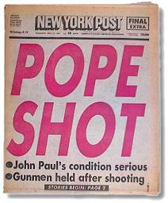
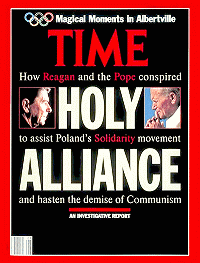
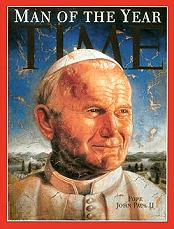
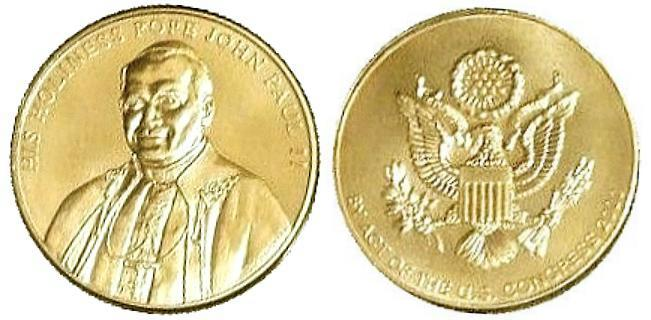
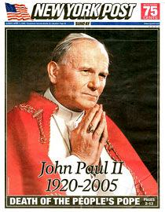
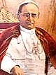

NOTE: The
following interpretation has been clearly and undeniably proved to be erroneous
by the election of Pope Francis on March 13, 20132. It remains online here,
uncorrected, for archival purposes, so that it can be studied in detail to learn
precisely where the error(s) of interpretation occurred.
The Last Pope
and
Satan's Impersonation of Christ Predicted?
Revelation 17 Expounded
The following interpretation apparently first surfaced in Adventist colleges shortly after
the 1981 assassination attempt on Pope John Paul II, and I first posted it on
the web back in
1996. We will soon know if this interpretation is true or not.
The table below illustrates what might be called a macro
interpretation of the seven heads and seven kings of Daniel and Revelation. In
other words it is a "big picture" interpretation, which equates the 7 heads /
mountains / kings with 7 empires:
| 1. Babylon |
|
| 2. Medo-Persia |
|
| 3. Greece |
|
| 4. Pagan Rome |
|
| 5. Papal Rome (538-1798) |
"five are fallen" |
|
6. France / Atheistic Communism |
"and one is" |
| 7. United States |
"short time" |
| 8. Papal Rome (1929 - ? ) |
"goes into perdition" |
That a mountain can symbolically represent a kingdom is evident from Isaiah
29:8 and Daniel 2:35. What I would like to explore in some detail might be a
called a micro, or magnified close-up interpretation of the seven heads
and seven kings of Daniel and Revelation. This does not discard the macro
interpretation, where mountains are empires, but rather builds on it. That the
7 heads are defined as both seven mountains and seven kings in
Revelation 17:9-10, strongly indicates multiple meanings or
fulfillments, with the 7 kings being distinctly different from the 7
mountains. (Unless otherwise noted, the King James Bible is quoted)
Rev 17:1 And there came
one of the seven angels which had the seven vials, and talked with me,
saying unto me, Come hither; I will show unto thee the judgment of the great
whore that sitteth upon many waters:
The verse sets the context of what follows in Revelation 17. John is shown
the final phase of the great whore, her judgment for the sins she has
committed.
Rev 17:2 With whom the
kings of the earth have committed fornication, and the inhabitants of the
earth have been made drunk with the wine of her fornication.
Here John is told the great whore is charged with having an illicit
relationship with kings, and making the people drunken on her wine. She has
used the kings of the earth to carry out her persecutions, and she has taught
the people her apostate doctrines, truth mixed with error.
A Woman Riding A Beast
Rev 17:3 So he carried me
away in the spirit into the wilderness: and I saw a woman sit upon a scarlet
coloured beast, full of names of blasphemy, having seven heads and ten
horns.
 |
In
scripture, the symbol of a woman is used to depict a church, a group of
believers: "I have likened the daughter of Zion to a comely and delicate
woman" (Jeremiah 6:2). Who is Zion? "And say unto Zion, Thou
art my people" (Isaiah 51:16). Note that John sees the great whore sit
on a scarlet beast. A beast is used to depict a
political state, such as the lion, bear, and leopard of Daniel 7,
representing the kingdoms of Babylon, Medo-Persian and Greece
respectively.
The woman/whore represents an
apostate church and sitting on the beast means she is has the political
power of the state: a church-state union, under the control of the church. |
Note also that the beast (state) that the woman (church) rides has seven
heads and ten horns, just as Satan is described in Revelation 12.
Rev 12:3 And there appeared another wonder in heaven; and behold a great
red dragon, having seven heads and ten horns, and seven crowns upon his
heads.
Rev 12:9 And the great dragon was cast out, that old serpent, called the
Devil, and Satan, ...
The parallel characteristics indicate that Satan is very much involved with
the church state entity described.
Rev 17:4 And the woman was
arrayed in purple and scarlet colour, and decked with gold and precious
stones and pearls, having a golden cup in her hand full of abominations and
filthiness of her fornication:
Rev 17:5 And upon her forehead was a name written, MYSTERY, BABYLON
THE GREAT, THE MOTHER OF HARLOTS AND ABOMINATIONS OF THE EARTH.
Here the great harlot is identified as Mystery Babylon, the great mother
church, and her daughter churches are likewise harlots. The mother church is
described as lavishly dressed in the colors purple and scarlet, having a
golden cup in her hand. This precisely identifies the Catholic Church. John is
told she is a mother, with harlot daughters, this means that John is seeing
the post-Reformation era Catholic Church.
The Harlot Church's Missing Color
The garments of the high priest of Israel, according to the
Bible, contained specific colors:
Exo 28:3 And thou shalt speak unto all that are wise
hearted, whom I have filled with the spirit of wisdom, that they may make
Aaron's garments to consecrate him, that he may minister unto me in the
priest's office.
Exo 28:4 And these are the garments which they shall make; a breastplate,
and an ephod, and a robe, and a broidered coat, a mitre, and a girdle: and
they shall make holy garments for Aaron thy brother, and his sons, that he
may minister unto me in the priest's office.
Exo 28:5 And they shall take gold, and blue, and purple, and scarlet,
and fine linen.
Exo 28:6 And they shall make the ephod of gold, of blue, and of
purple, of scarlet, and fine twined linen, with cunning work.
Exo 28:7 It shall have the two shoulder pieces thereof joined at the two
edges thereof; and so it shall be joined together.
Exo 28:8 And the curious girdle of the ephod, which is upon it, shall be of
the same, according to the work thereof; even of gold, of blue, and
purple, and scarlet, and fine twined linen.
So, the garments of the high priest include purple, scarlet,
and blue, but blue is notably absent in the description of the woman of
Revelation 17:
Rev 17:4 And the woman was arrayed in purple and
scarlet colour, and decked with gold and precious stones and
pearls, having a golden cup in her hand full of abominations and filthiness
of her fornication:
The Bible even tells us the spiritual meaning of the color
blue:
|
 |
Num 15:38 Speak unto the children of Israel, and bid them
that they make them fringes in the borders of their garments throughout
their generations, and that they put upon the fringe of the borders a
ribband of blue:
Num 15:39 And it shall be unto you for a fringe, that ye may look upon
it, and remember all the commandments of the LORD, and do them; and that
ye seek not after your own heart and your own eyes, after which ye use to go
a whoring:
Deu 22:12 Thou shalt make thee fringes upon the four quarters of
thy vesture, wherewith thou coverest thyself.
|
|
 |
Why blue? It is understood that the tablets of the Ten
Commandments were cut from the clear blue sapphire seen on mount Sinai (Exo
24:10), which makes up the very throne of God (Eze 1:26, 10:1). So, the Ark of the
Covenant in the most holy apartment of the sanctuary, the throne of God's
presence (the Shekinah glory), contained the blue sapphire tablets of the
Ten Commandments.
|
So regarding the whoring harlot church, though she claims to
be God's representative on earth, the missing color blue in her description
indicates that she actively disregards and transgresses the law of God. One of
the characteristics of the antichrist power is lawlessness:
[NIV] 2 Th 2:3 Don't let anyone deceive you in any way, for that day will
not come until the rebellion occurs and the man of lawlessness is
revealed, the man doomed to destruction.
[NIV] 2 Th 2:7 For the secret power of lawlessness is already at
work; but the one who now holds it back will continue to do so till he is
taken out of the way.
And, note what the antichrist little horn power tries to change:
Dan 7:25 And he [little horn] shall speak great words against the most
High, and shall wear out the saints of the most High, and think to change
times and laws [of the most High]: and they shall be given into his hand
until a time and times and the dividing of time.
The only one of the ten commandments of God that deals with time is the
sabbath commandment (Exo. 20:8-11), which the Catholic Church claims to have
changed, from Saturday the seventh day, to Sunday, the first day of the week.
A Persecuting Church
Rev 17:6 And I saw the
woman drunken with the blood of the saints, and with the blood of the
martyrs of Jesus: and when I saw her, I wondered with great admiration.
John is being shown the Catholic Church after her 1260 year period
of dominion and bloody persecution has come to an end, and she stands guilty
before God of the blood of countless Christian martyrs. Note that the beast
she rides is scarlet in color, scarlet red with the blood of saints.
The Beast That Was, and Is Not, and Yet
Is.
Rev 17:7 And the angel
said unto me, Wherefore didst thou marvel? I will tell thee the mystery of
the woman, and of the beast that carrieth her, which hath the seven heads
and ten horns.
Rev 17:8 The beast that thou sawest was, and is not; and shall ascend
out of the bottomless pit, and go into perdition: and they that dwell on the
earth shall wonder, whose names were not written in the book of life from
the foundation of the world, when they behold the beast that was, and is
not, and yet is.
The angel explains to John that there are three phases to the beast:
| The Beast that Was |
Is Not |
And Yet Is |
Papal sovereignty and persecution
1260 years (538-1798) |
Papal sovereignty lost
(1798-1929) |
Papal sovereignty restored
(1929 - ?) |
- For 1260 years the papacy ruled over Europe, from 538 to 1798. During
these dark ages the papacy exercised both political and ecclesiastical
power, the woman rode the beast, the beast that was.
- The papacy lost its political power February 15th, 1798, with the capture of Pius VI
by the armies of Napoleon, and it lost the last of the
Papal States, on
September 20th, 1870 when Italian troops seized the city of Rome, leaving
the Pope a virtual prisoner in the Vatican. The Catholic Church had lost her political
power and sovereignty, consequently the beast was not.
- Now, John in chapter 17, sees the harlot in her final phase, after
she has regained her lost political power (sit on the beast), and the world wonders at
her revival. Papal sovereignty was restored February 11th, 1929 with the signing of the
Lateran Treaty with Benito Mussolini. And yet the beast is. It has
ascended back out of extinction, or the bottomless pit, and proceeds from
there to its destruction.
Rev 17:9 And here is
the mind which hath wisdom. The seven heads are seven mountains, on
which the woman sitteth.
This unquestionably points to the city of Rome, the city of seven hills, in
which the apostate church headquarters itself. Note that the mountains/hills
in this interpretation are literal hills.
"And Yet Is" - The Beast Since 1929
Now based on the first 9 verses, this study will presume that there is an
application of the symbols in Revelation 17 to the revived beast, the beast
that yet is, the post 1929 papacy. Therefore, in the subsequent verses,
John is shown in detail critical information about the beast that "yet is",
the revived church-state power of the papacy, following the 1929 revival of
political sovereignty, when the Pope became a King again.
The 7 Kings
Rev 17:10 And there are
seven kings: five are fallen, and one is, and the other is not yet come;
and when he cometh, he must continue a short space.
Rev 17:9 "This calls for a mind with wisdom.
The seven heads are seven hills on which the woman sits.
Rev 17:10 They are also seven kings. ... [NIV]
What Is a "Head" in Scripture?
Daniel tells king Nebuchadnezzar that he is the head of gold:
Dan 2:37 Thou, O king, art a king of kings: for the God of heaven hath
given thee a kingdom, power, and strength, and glory.
Dan 2:38 And wheresoever the children of men dwell, the beasts of the field
and the fowls of the heaven hath he given into thine hand, and hath made
thee ruler over them all. Thou art this head of gold.
In scripture the "head" is the one with
kingly authority:
1 Sam 15:17 And Samuel said [to Saul], When thou wast little in thine own
sight, wast thou not made the head of the tribes of Israel, and the
LORD anointed thee king over Israel?
2 Ki 9:6 And he arose, and went into the house; and he poured the oil
on his [Jehu's] head, and said unto him, Thus saith the LORD God
of Israel, I have anointed thee king over the people of the LORD,
even over Israel.
1 Cor 11:3 But I would have you know, that the head of every man is
Christ; and the head of the woman is the man; and the head of
Christ is God.
Eph 4:15 But speaking the truth in love, may grow up into him in all
things, which is the head, even Christ:
Eph 5:23 For the husband is the head of the wife, even as Christ is
the head of the church: and he is the saviour of the body.
Eph 5:24 Therefore as the church is subject unto Christ, so let the wives be
to their own husbands in every thing.
The 4 Heads of Greece: a Template
In Daniel chapter 7, Daniel sees a leopard with four heads:
Dan 7:6 After this I beheld, and lo another, like a leopard, which had
upon the back of it four wings of a fowl; the beast had also four heads;
and dominion was given to it.
Who is this leopard? It is paralleled by the goat in Daniel 8, which is
plainly identified:
Dan 8:21 And the rough goat is the king of Grecia: and the great horn
that is between his eyes is the first king.
Dan 8:22 Now that being broken, whereas four stood up for it, four kingdoms
shall stand up out of the nation, but not in his power.
The great horn is Alexander the Great of Greece. Who are the four heads of
the leopard? The four generals of Alexander the Great that succeeded him:
1. Seleucus.
2. Lysimachus
3. Cassander
4. Ptolemy
Using Greece (the leopard with 4 heads) as a template, it is reasonable
to conclude that an animal with multiple heads symbolically represents two
distinct phases of an empire, and that the heads exist only in the
second phase, as Alexander (the body of the leopard) had to fall before the
four heads had dominion. Therefore, the beast with 7 heads represents two
phases, and the 7 heads/kings only have dominion in the second phase of
existence, the beast that "yet is".
So when Revelation 17:10 interprets the 7 heads as 7 kings, that is exactly
what it means in the strictest sense. It is telling us about 7 literal kings.
In the context of the previous verses, these 7 kings rule from the city of
Rome, after the great harlot church has regained the power of the state, and
so rides the beast again.
The Name of Blasphemy on the 7 Heads
Rev 13:1 And I stood upon the sand of the sea, and saw a beast rise up
out of the sea, having seven heads and ten horns, and upon his horns
ten crowns, and upon his heads the name* of
blasphemy.
The word translated "name" is the Greek word onoma:
*3686. onoma, on'-om-ah; from a
presumed der. of the base of G1097 (comp. G3685); a "name" (lit. or fig.)
[authority, character]:--called, (+ sur-) name (-d).
The Greek word onoma is also used in Revelation 19:
Rev 19:16 And he hath on his vesture and on his thigh a
name written, KING OF KINGS, AND LORD OF
LORDS.
As demonstrated in the above verse, the word onoma can designate a
title, rather than a name. Revelation 13:1, therefore, tells us a
blasphemous title is found on all 7 heads of the beast. Note how the New
International Version reads:
Rev 13:1 And the dragon stood on the shore of the sea. And I saw a beast
coming out of the sea. He had ten horns and seven heads, with ten crowns on
his horns, and on each head a blasphemous name. [NIV]
The same title of blasphemy is found on all 7 kings.
Revelation 13 also give us a clue that directs us to that title in the last
verse of the chapter:
Rev 13:18 Here is wisdom. Let him
that hath understanding count the number of the beast: for it is the number
of a man; and his number is Six hundred threescore and six.
Here is wisdom is a link to Rev 17:9,
which points us to the great harlot church that rules from Rome, the city on 7
hills. So, the "seven kings" are literal kings, seven consecutive Popes
of Rome. The blasphemous title is Vicar of the Son of
God / Vicarius Filii Dei, the Roman Numerals of which equal 666.
Identifying The Sixth King
The time hack or reference point for "five are fallen" is the serious
wounding, which John witnesses in Rev 13:3:
Rev
13:3
And I saw one of his heads as it were wounded to death; ... |
...
and his deadly wound
was healed: ... |
|
 |
|
Pope John Paul II was seriously wounded May 13th, 1981 in an attempted
assassination in St. Peter's square, he was shot twice with a 9mm pistol and
seriously wounded in the abdomen, right arm and left hand, but he recovered
after two operations and two and a half months in hospital. That it was a
nearly fatal wounding is attested to by Cardinal Angelo Sodano, the Vatican
Secretary of State, and even the Pope himself:
He [John Paul II] had been very close to death, and he himself explained
his survival in the following words: “... it was a mother's [Mary's] hand
that guided the bullet's path and in his throes the Pope halted at the
threshold of death”
Source:
 THE MESSAGE OF FATIMA, Vatican web site.
THE MESSAGE OF FATIMA, Vatican web site.
Note that even the Pope considered the attempted assassination to be a
fulfillment of prophecy!, (though he believed it to be a fulfillment of the
third secret of Fatima).
... and all the world wondered after the beast.
|

TIME - Oct 15, 1979 |

TIME - Feb 24, 1992 |

TIME - Dec 26, 1994 |
|

U.S. Congressional Gold Medal awarded to Pope John Paul II in 2000. |
|
 |

AP / L'OSSERVATORE ROMANO photo |
● Hundreds of world
leaders attended the funeral, reported to be the largest such gathering
in world history, including 4 kings, 5 queens, 70 presidents and prime
ministers, and 14 leaders of other religions.
● Over 4 million pilgrims arrived in Rome, a city with 3 million residents.
● The funeral likely had the world's largest TV audience for any event, exceeding 2 billion viewers. |
|
At the time of his wounding in 1981, five Popes had already fallen since the
1929 revival of papal political sovereignty (Rev. 17:10).
Rev 17:10 And there are
seven kings: five are fallen, and one is, and the other is not yet come;
and when he cometh, he must continue a short space.
|
The 7 Kings of the Beast that "Yet Is" |
|
1. |
2. |
3. |
4. |
5. |
6. |
7. |
8. |
|
 |
 |
|
 |
|
|
|
|
| Pius XI |
Pius XII |
John XXIII |
Paul VI |
John Paul I |
John Paul II |
Benedict XVI |
Satan |
| 1922 - 1939 |
1939 - 1958 |
1958 - 1963 |
1963 - 1978 |
1978 |
1978 - 2005 |
April 19, 2005
to
Feb. 28, 2013 |
? |
Lateran Treaty
Feb. 11,
1929 |
|
|
|
Reigned only 33
days |
Seriously Wounded
1981 |
Rules only a
short time.
Announced
resignation
Feb. 11, 2013 |
Impersonates
Christ's 2nd Coming |
|
Five are fallen |
One is |
One
yet to come |
Goes into perdition |
Satan Masquerades as Christ
Rev 17:11 And the beast
that was, and is not, even he is the eighth, and is of the seven, and goeth
into perdition.
Note that there are only seven heads on the beast in Rev 17:3,
and seven kings in Rev 17:10, not
eight. If this interpretation is true, there will be no more Popes. The seventh in the series of Popes since 1929, Benedict XVI (Joseph
Ratzinger), will be Pope for only a short time, because shortly after
his election, Satan impersonates the second coming of Christ.
Satan would be the "eighth", and he is of the seven, and leads the harlot
apostate church to her destruction.
2 Cor 11:14 And no wonder, for Satan himself masquerades as an angel of
light.
2 Cor 11:15 It is not surprising, then, if his servants masquerade as
servants of righteousness. Their end will be what their actions deserve. [NIV]
Rev 13:4 And they worshipped the dragon [Satan] which gave power unto the
beast: ...
2 Th 2:11 And for this cause God shall send them strong delusion, that
they should believe a lie:
2 Th 2:12 That they all might be damned who believed not the truth, but had
pleasure in unrighteousness.
The 7th and last Pope, Benedict XVI, turns over the throne of Peter to Satan, and the world
worships Satan believing him to be Christ.
Pope Predicted a Short Reign to
Cardinals
NICOLE WINFIELD
Associated Press
VATICAN CITY - [Apr 21, 2005] Pope Benedict XVI predicted a
"short reign" in comments to cardinals just after his election, and his
brother said Wednesday he was worried about the stress the job would put on
the 78-year-old pontiff. Joseph Ratzinger has had ailments in the past,
including a 1991 hemorrhagic stroke, that raise questions about how long his
papacy will last - and whether the world will watch another pope slowly
succumb to age and ailments on a very public stage. Benedict was the oldest
pontiff elected in 275 years. ... Chicago Cardinal Francis George said
Ratzinger, who had repeatedly asked John Paul to let him retire, told the
cardinals, "I too hope in this short reign to be a man of peace." ...
The 10 Kings
Rev 17:12 And the ten
horns which thou sawest are ten kings, which have received no kingdom as
yet; but receive power as kings one hour with the beast.
Rev 17:13 These have one mind, and shall give their power and
strength unto the beast.
The ten horns are the kings of the earth, who turn over their authority to
the returned Christ (actually Satan).
Rev 17:14 These shall make
war with the Lamb, and the Lamb shall overcome them: for he is Lord of
lords, and King of kings: and they that are with him are called, and chosen,
and faithful.
Under the leadership of Satan impersonating Christ, war will be waged
against the remnant church of God, just as Saul persecuted the Christians
before being converted on the road to Damascus.
Rev 12:12 ... Woe to the inhabiters of the earth and of the sea! for the
devil is come down unto you, having great wrath, because he knoweth that he
hath but a short time.
2 Th 2:11 And for this cause God shall send them strong delusion, that
they should believe a lie:
2 Th 2:12 That they all might be damned who believed not the truth, but had
pleasure in unrighteousness.
Saul thought he was serving God by seeking out and killing Christians.
Those deceived into accepting Satan as Christ (the strong delusion) will
initially think they are serving God, and they will make war against God's
true chosen people. Before his election to the papacy Cardinal Joseph
Ratzinger was the Prefect of the Congregation for the Doctrine of the Faith,
which is the modern name for the Office of the Inquisition!
Rev 17:15 And he saith
unto me, The waters which thou sawest, where the whore sitteth, are peoples,
and multitudes, and nations, and tongues.
The above verse parenthetically identifies the waters where the great
harlot sits as covering many peoples and nations. Her rule is universal.
Catholic means universal. The whore, like Satan in Ezekiel 28:2, has set
herself in the seat of God, over many waters: "... and thou hast said, I am a
God, I sit in the seat of God, in the midst of the seas; ... ."
Rev 17:16 And the ten
horns which thou sawest upon the beast, these shall hate the whore, and
shall make her desolate and naked, and shall eat her flesh, and burn her
with fire.
Rev 17:17 For God hath put in their hearts to fulfil his will, and to
agree, and give their kingdom unto the beast, until the words of God shall
be fulfilled.
The only place in scripture where the prescribed penalty for sin was to be
burned by fire was for a harlot daughter of the high priest:
Lev 21:9 And the daughter of any priest, if she profane herself by
playing the whore, she profaneth her father: she shall be burnt with fire.
The kingdoms of the earth initially are taken in by the great deception,
but soon discover the truth. They turn on the great whore, and destroy her
with their own hands by fire, the specified penalty in Lev. 21:9.
Rev 17:18 And the woman
which thou sawest is that great city, which reigneth over the kings of the
earth.
Another parenthetical reference to the papacy and the City of Rome.
|
EMPIRES OF DANIEL AND
REVELATION |
| EMPIRE |
DANIEL 2 |
DANIEL 7 |
DANIEL 8 |
REV 13 |
REV 17 |
BABYLON
Until 539 B.C. |
Head of Gold
vs. 32, 38 |
Lion
vs. 4, 17 |
------ |
Mouth of the
Lion
(1 head)
v. 2 |
------ |
MEDO - PERSIA
Until 331 B.C. |
Chest + Arms of Silver
vs. 32, 39 |
Bear
1 side higher
vs. 5, 17 |
Ram w/ 2 horns
1 horn higher
vs. 3, 20 |
Feet of the
Bear
(1 head)
v. 2 |
------ |
GREECE
Until 168 B.C. |
Belly of Brass
vs. 32, 39 |
Leopard
with 4
heads + 4 wings
vs. 6, 17 |
He-Goat
Great Horn to
4 horns
vs. 5, 21 |
Body of the Leopard
(4 heads) v. 2 |
------ |
PAGAN ROME
Until 476 A.D. |
Legs of Iron
vs. 33, 40 |
4th
Diverse Beast
Iron Teeth
vs. 7, 17 |
------ |
World power
of John's
time
Rome / Dragon
(1 head) v.2 |
------ |
| Europe Divided |
10 Toes
vs. 33, 41 |
10 Horns
vs. 20, 24 |
------ |
10 Horns
v. 1 |
10 Horns
vs. 7, 12, 16 |
PAPAL ROME
Begins 538 A.D.
Head Wound - 1798 A.D. |
Clay & Iron
Church & State
Jer. 18:1-6 |
Diverse
Little Horn
vs. 8, 11,
24-25
3 1/2 Times v. 25 |
Little Horn
vs. 9-12,
23-25 |
SEA BEAST
Speaks Blasphemy
War With Saints v. 7
42 Months v. 5
Head Wound v. 3 |
WOMAN RIDES BEAST
Church & State
Beast That Was - vs. 6, 11
538 A.D-1798 A.D.
Woman drunken with
the blood of the saints |
JUDGMENT BEGINS
1844 A.D. |
------ |
Judgment Scene
vs. 9-10,
22, 26 |
Sanctuary
Cleansed
v. 14 |
------ |
Judgment of the
Great Whore v.1
The Beast Is Not v. 11
1798 A.D.-1929 A.D. |
Revived
PAPAL ROME
Lateran Treaty
Feb. 11, 1929 |
------ |
------ |
------ |
Head Wound to
Sea Beast Healed
vs. 3, 12 |
Beast That Yet Is
7 Heads/Kings
vs. 8-11
Since 1929 |
| ------ |
------ |
------ |
------ |
F
I
V
E
H
A
V
E
F
A
L
L
E
N |
1st King
Pius XI
1922 - 1939 |
| ------ |
------ |
------ |
------ |
2nd King
Pius XII
1939 - 1958 |
| ------ |
------ |
------ |
------ |
3rd King
John XXIII
1958 - 1963 |
| ------ |
------ |
------ |
------ |
4th King
Paul VI
1963 - 1978 |
| ------ |
------ |
------ |
------ |
5th King
John Paul I
1978 |
| ------ |
------ |
------ |
Pope Wounded
1981
vs. 3, 12 |
O
N
E
I
S |
6th King
John Paul II
1978 - 2005 |
Announced his
resignation on
Feb. 11, 2013
the 84th anniversary
of the Lateran
treaty |
------ |
------ |
------ |
------ |
7th King
Benedict XVI
April 19, 2005 -
Feb. 28, 2013 |
| UNITED STATES |
------ |
------ |
------ |
Lamb-like 2
Horned
LAND BEAST
False Miracles
Mark of Beast
vs. 11-18 |
------ |
| |
------ |
------ |
------ |
------ |
8th - of the 7
SATAN |
| 10 KINGS |
------ |
------ |
------ |
------ |
10 Horns/Kings
Burn Whore v. 16 |
| GOD'S KINGDOM |
Stone -
Mountain
vs. 35, 44 |
God's Kingdom
vs. 13-14, 27 |
------ |
------ |
------ |
The above chart as a separate file
What does the word VATICAN mean?
666, The number of the Beast, and the
AntiChrist.
The Deadly Wound of Revelation 13:3
Lateran Concordat of 1929 - Papal Wound Healed!
The Red Dragon and Rome
Times, Time, and Half a Time